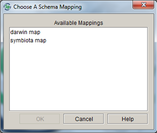
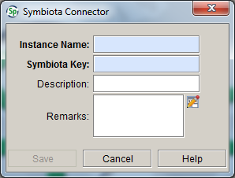
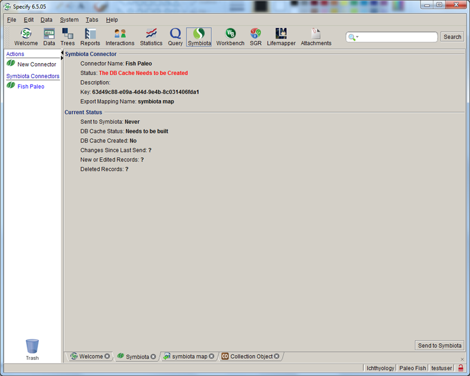

Sharing Data with Symbiota
Sharing Data with Symbiota
Sharing Data with Symbiota
Sharing Data with SymbiotaSymbiota is an open source software project dedicated to providing web tools that allow biologists to curate quality datasets of the world's flora and fauna.
New in Specify 6.5.05, data in Specify can be shared with Symbiota through an automated tool once the following steps are complete.
Open the System Preferences:
- For Mac: Choose Specify > Preferences > Symbiota .
- For Windows and Linux: Choose Edit > Preferences > Symbiota.
Type or Copy/Paste the base URL for your Symbiota project (this must be provided by Symbiota) into the Base URL text box.
Next, add the Symbiota tool to the Task Bar:
- For Mac: Choose Specify > Preferences > Task Bar.
- For Windows and Linux: Choose Edit > Preferences > Task Bar.
Check the Add Symbiota checkbox. The Symbiota button should now appear in your Specify Task Bar.
Next, define the relationships between the fields in Specify and the predefined fields in Symbiota by creating what is referred to as a 'mapping'. This is accomplished using the Schema Mapping tool.
Note: Symbiota uses a subset of the Darwin Core schema. If a schema mapping based on the fields in Darwin Core already exists, you may choose to use that mapping rather than create a new one and proceed to step 4, Create a Symbiota Connector.
Schema refers to the many tables and fields that systematize the many dimensions and relationships of the data within biological collections. When preparing data in Specify to be published in Symbiota, it is necessary to use a predefined schema to ensure all necessary data fields are included in the data export. Specify includes a schema for use when publishing data to Symbiota.
Note: If you already have a Darwin Core mapping set up for publishing your data, you can reuse this existing mapping and skip this step.
Open the Schema Mapping tool by choosing System > Schema Mapper.
1. Click Create New Mapping located on the sidebar.
2. Choose SymbiotaDWC(1.0) from the schema list.
3. Check the default mapping file and edit/add schema concepts and conditions.
Remap a term by simply clicking the list box (
) and selecting a new schema concept from the list. Only unmapped schema concepts are available from the list.
Add a term by selecting a field from the Specify list and clicking the
button. The Schema Concept will be defined as 'Not Mapped'. Choose a schema Concept from the drop down list to map the new field.
Note: it is not necessary to include attachment fields or a field for GUID in mappings, both of these are automatically included in mapping files.
Delete a term by selecting it from the list and clicking the
(remove field) button.
Query Expressions can be used to narrow the results. These function similarly to the Query Builder. For additional help creating/editing query expressions please refer to the Query Builder help page.
Add Conditions to Eliminate Duplicate Records
Symbiota requires that all uploaded records be unique. Due to the one-to-many relationships contained in Specify databases it may be necessary to add certain conditional fields to the schema to ensure this e.g. adding the Determination Current field and setting it to Yes will eliminate multiple determinations. One can also select a table to take advantage of the formatted and aggregated value for that table e.g. selecting the Collectors table will add all collectors on a single line. Fields can also be added to eliminate certain records from the resulting index.
Note: uncheck the Show checkbox to hide the schema concept in the exported data cache.
Mapping Checklist
4. Before saving the schema map for Symbiota check the following list against your mapping. If any of the following items are not correct the data upload to Symbiota will fail.
- When a new field is added to the mapping but not mapped to an existing Schema Concept, the checkbox for Show MUST be unchecked.
- Fields may only be used once within a single mapping.
The first time the data cache is built for a schema mapping intended for use with the Symbiota tool, it must be completed in the Data Exporter, a separate application that ships with Specify. Subsequent updates to the cache can be built from within the Symbiota tool in Specify. Before opening the Data Exporter, you will need to close the Specify application.
The Data Exporter application is located in the bin directory within the Specify application directory, which stores the executable files for Specify. Double click Data Exporter (or select it from Start/Program Files/Specify on Windows) to launch the tool. Users are required to login using their Specify Username and Password.
The Data Exporter application opens as a three-column table with action buttons.
Data Exporter
- Choose the appropriate Mapping from the list.
- Click the Build/Update button to build the data cache.
Note: In order to build the cache the first time, theMySQL admin (root) username and password are required.
- Click the Quit button to exit the Data Exporter.
A Symbiota connector is the the 'pipeline' Specify uses to send data to Symbiota.
- Open the Specify application
- Click the (Symbiota) button on the Task Bar.
- Click New Connector on the Side Bar.

Saved mappings that include the required fields for Symbiota will appear in the dialog. Select a Symbiota Schema Mapping from the list and click the OK button.
Note: Schema Mappings may only be used for one Symbiota Connector. If you require a new Symbiota Connector, you must first create a new Schema Mapping.
Add information for the Symbiota Connector in the next dialog:

- Type an Instance Name (this is a required field). This can be a unique name and does not need to match a project in Symbiota.
- Type the Symbiota Key for the project (this is also a required field). This key is provided to your project by Symbiota. A connector can not be established without this key.
- Add Description and Remarks as desired (these are not required fields).
- Click the Save button.
Once a connector has been created it will appear in the Symbiota Connector section of the side bar. Click on a Connector in the side bar to view information about the Connector including the status of the associated data cache in the Workspace.
Click on a Connector in the side bar to view information about the connector, including the status of the associated data cache in the Workspace.

The Status field displays the status of the data cache.
Note: When new data is entered while the Symbiota tool is open in a tab you must click on the connector to refresh the status.
| Status Message | Action Required |
|---|---|
| The DB Cache Needs to be Created | Build the Cache using the Data Exporter Tool |
| The DB Cache Needs to be Rebuilt | Rebuild the Cache using the Data Exporter Tool |
| Data to Send to Symbiota | Click the Send to Symbiota button |
| Up to Date | No Action Required |
Edit/Delete the Symbiota Connector
Right-button-Click on the Symbiota Connector name in the side bar to edit the associated Name, Key, Description or Remarks.
Drag a Connector and Drop it onto the trash can to delete it.
Send/Upload Data
Note: Clicking the Send to Symbiota button when the Status Message is Up to Date will display a prompt with the option of sending the entire data cache to Symbiota.
Note: Caches with a large amount of data may take a few minutes to transfer.